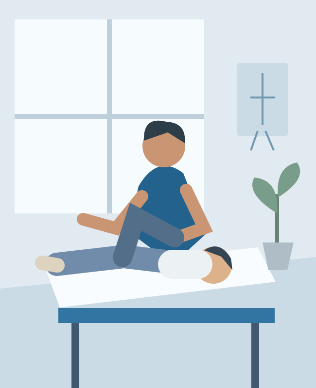

P
Physiotherapy lead
Musculoskeletal assessment and continuity of care.
PHYSIOTHERAPY & SPORTS REHAB · SHOREDITCH
Expert physiotherapy for sports injuries, chronic pain, and post-surgical rehab.
A clinical website concept.
Practitioner registration and availability are not verified.

A BETTER UNDERSTANDING
Start with a conversation.
Find a relevant service route below.
INDIVIDUAL CARE, CLEAR OPTIONS
Illustrative services and prices. Assessment and suitability must be confirmed by a qualified clinician.
WHY MOTION
The proposed approach gives you 60 minutes for a standard physiotherapy appointment, with continuity from the same practitioner where available.
Clear explanations and collaborative goals help you understand your plan. Outcomes and timelines differ for every person.
YOUR CLINICIANS / EXAMPLE TEAM STRUCTURE
Musculoskeletal assessment and continuity of care.
Activity-led rehabilitation and return-to-sport planning.
Gait, loading and movement assessment.
Illustrative roles, not real clinicians. Check HCPC registration and relevant qualifications directly before choosing a provider.
ONE STEP AT A TIME
Discuss your goals and find an appropriate appointment.
A clinician evaluates your needs and agrees next steps.
Review and adapt your individual programme.
Progress at a pace appropriate to your circumstances.
THE EXPERIENCE WE DESIGN FOR
“Feeling heard. Understanding the plan. Knowing what comes next.”
A service principle, not a patient review or outcome guarantee.
YOUR NEXT STEP
Prepare an appointment outline. This demonstration does not provide medical advice, check live availability or contact a clinic.
For severe, sudden or worsening symptoms, seek appropriate urgent medical care. In a UK emergency call 999; NHS 111 can help with urgent non-emergency advice.